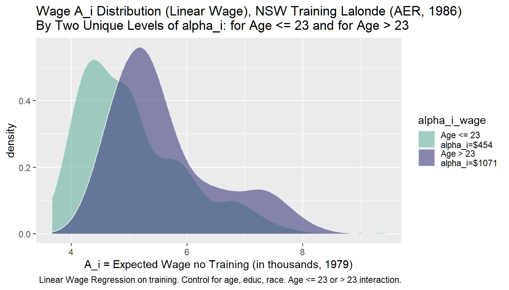

BINARY–NSW Training WAGE and EMPLOYMENT Optimal Allocation Analysis
ffv_opt_sobin_rkone_allrw_training.RmdBack to Fan’s Optimal Allocation Homepage Table of Content
Objective
Test binary allocation queue with Lalonde training dataset. There are 722 observations, 297 in the treatment group, 425 in the control group.
Already completed optimal ranking analysis and regressions for wage and employment. Here, I combine the results together and generate some joint graphs analyzing:
- The relationship between expected probability of employment and wage (\(A_i\)) without training, and the expected return to training for employment and wage (\(\alpha_i\)).
- For each individual, does their optimal allocation ranking change under the Rawlsian to Utilitarian planner? For wage vs employment based rankings
- Who are those ranked in top 10 to receive? Along the spectrum
- Resource Equivalent Variation along the spectrum
Load Packages and Data
Merge the Wage and Employmennt Rsults
Generate four categories by initial height and mother’s education levels combinations.
# Load Data
data(df_opt_lalonde_training_employ)
data(df_opt_lalonde_training_wage)
# dfj, dataframe joint
dfj <- df_opt_lalonde_training_employ %>% left_join(df_opt_lalonde_training_wage, by = 'id')
# drop the .y variables, clean the .x out
dfj <- dfj %>% select(-contains(".y")) %>%
rename_at(vars(ends_with(".x")), funs(str_replace(., ".x", "")))## Warning: funs() is soft deprecated as of dplyr 0.8.0
## Please use a list of either functions or lambdas:
##
## # Simple named list:
## list(mean = mean, median = median)
##
## # Auto named with `tibble::lst()`:
## tibble::lst(mean, median)
##
## # Using lambdas
## list(~ mean(., trim = .2), ~ median(., na.rm = TRUE))
## This warning is displayed once per session.# order and organize variables
dfj <- dfj %>% select(id,
starts_with("A_"), starts_with("alpha_"), starts_with("beta_"),
contains("rank"), contains("rho"),
everything())
# Summarize
str(dfj)## 'data.frame': 722 obs. of 38 variables:
## $ id : int 1 2 3 4 5 6 7 8 9 10 ...
## $ A_i_employ : num 0.648 0.858 0.658 0.606 0.675 ...
## $ A_i_wage : num 4.71 6.84 4.37 4.13 4.19 ...
## $ alpha_i_employ : num 0.0788 0.0636 0.0775 0.0837 0.0751 ...
## $ alpha_i_wage : num 0.454 0.454 0.454 0.454 0.454 ...
## $ beta_i_employ : num 0.00139 0.00139 0.00139 0.00139 0.00139 ...
## $ beta_i_wage : num 0.00139 0.00139 0.00139 0.00139 0.00139 ...
## $ rank_min_employ : int 187 688 246 43 423 3 423 406 640 294 ...
## $ rank_max_employ : int 180 685 235 40 406 2 406 389 622 281 ...
## $ avg_rank_employ : num 182.7 687 239 41.3 412.3 ...
## $ rank_min_wage : int 392 689 278 178 223 483 223 499 545 496 ...
## $ rank_max_wage : int 284 673 163 61 106 399 106 416 495 68 ...
## $ avg_rank_wage : num 356 684 240 139 184 ...
## $ rho_c1_rk_employ: int 180 688 235 40 406 2 406 389 640 281 ...
## $ rho_c2_rk_employ: int 181 688 236 41 408 2 408 391 640 282 ...
## $ rho_c3_rk_employ: int 187 685 246 43 423 3 423 406 622 294 ...
## $ rho_c1_rk_wage : int 284 673 163 61 106 399 106 416 495 496 ...
## $ rho_c2_rk_wage : int 392 689 278 178 223 483 223 499 545 68 ...
## $ rho_c3_rk_wage : int 392 689 278 178 223 483 223 499 545 68 ...
## $ trt : Factor w/ 2 levels "ntran","train": 1 1 1 1 1 1 1 1 1 1 ...
## $ age : int 23 26 22 34 18 45 18 27 24 34 ...
## $ educ : int 10 12 9 9 9 11 9 12 8 11 ...
## $ black : int 1 0 1 1 1 1 1 1 0 1 ...
## $ hisp : int 0 0 0 0 0 0 0 0 0 0 ...
## $ marr : int 0 0 0 0 0 0 0 0 0 1 ...
## $ nodeg : int 1 0 1 1 1 1 1 0 1 1 ...
## $ re74 : num 0 0 0 NA 0 0 0 NA 0 0 ...
## $ re75 : num 0 0 0 4368 0 ...
## $ re78 : num 0 12384 0 14051 10740 ...
## $ emp78 : num 0 1 0 1 1 1 1 1 1 1 ...
## $ emp75 : num 0 0 0 1 0 0 0 1 0 0 ...
## $ race : num 1 0 1 1 1 1 1 1 0 1 ...
## $ age_m2 : num 1 2 1 2 1 2 1 2 2 2 ...
## $ age_m3 : num 2 2 2 3 1 3 1 3 2 3 ...
## $ p_mpg : num 0.678 0.89 0.688 0.638 0.704 ...
## $ p_mpg_hp : num 0.648 0.858 0.658 0.606 0.675 ...
## $ p_mpg_hp_bi0 : num 0.648 0.858 0.658 0.606 0.675 ...
## $ p_mpg_hp_bi1 : num 0.727 0.921 0.736 0.69 0.75 ...## id A_i_employ A_i_wage alpha_i_employ
## Min. : 1.0 Min. :0.5019 Min. :3.673 Min. :0.04560
## 1st Qu.: 181.2 1st Qu.:0.6490 1st Qu.:4.433 1st Qu.:0.07152
## Median : 361.5 Median :0.6708 Median :4.970 Median :0.07593
## Mean : 854.4 Mean :0.6978 Mean :5.146 Mean :0.07497
## 3rd Qu.:1458.5 3rd Qu.:0.7102 3rd Qu.:5.687 3rd Qu.:0.07896
## Max. :4110.0 Max. :0.9007 Max. :9.420 Max. :0.10440
##
## alpha_i_wage beta_i_employ beta_i_wage rank_min_employ
## Min. :0.4538 Min. :0.001385 Min. :0.001385 Min. : 2.0
## 1st Qu.:0.4538 1st Qu.:0.001385 1st Qu.:0.001385 1st Qu.:188.2
## Median :0.4538 Median :0.001385 Median :0.001385 Median :381.0
## Mean :0.5538 Mean :0.001385 Mean :0.001385 Mean :377.9
## 3rd Qu.:0.4538 3rd Qu.:0.001385 3rd Qu.:0.001385 3rd Qu.:580.8
## Max. :1.0708 Max. :0.001385 Max. :0.001385 Max. :722.0
##
## rank_max_employ avg_rank_employ rank_min_wage rank_max_wage
## Min. : 1.0 Min. : 1.333 Min. :119.0 Min. : 1.00
## 1st Qu.:180.0 1st Qu.:183.917 1st Qu.:295.0 1st Qu.: 92.25
## Median :355.0 Median :366.333 Median :450.0 Median :254.00
## Mean :349.7 Mean :363.814 Mean :431.8 Mean :295.86
## 3rd Qu.:516.0 3rd Qu.:541.667 3rd Qu.:578.8 3rd Qu.:492.00
## Max. :722.0 Max. :722.000 Max. :722.0 Max. :722.00
##
## avg_rank_wage rho_c1_rk_employ rho_c2_rk_employ rho_c3_rk_employ
## Min. : 48.33 Min. : 1.0 Min. : 1.0 Min. : 1.0
## 1st Qu.:202.00 1st Qu.:181.2 1st Qu.:181.2 1st Qu.:187.0
## Median :326.67 Median :365.0 Median :367.0 Median :371.0
## Mean :363.81 Mean :363.8 Mean :363.8 Mean :363.8
## 3rd Qu.:526.00 3rd Qu.:544.0 3rd Qu.:543.2 3rd Qu.:542.0
## Max. :722.00 Max. :722.0 Max. :722.0 Max. :722.0
##
## rho_c1_rk_wage rho_c2_rk_wage rho_c3_rk_wage trt age
## Min. : 2.0 Min. : 1.0 Min. : 1.0 ntran:425 Min. :17.00
## 1st Qu.:183.0 1st Qu.:183.0 1st Qu.:183.0 train:297 1st Qu.:19.00
## Median :364.0 Median :363.0 Median :363.0 Median :23.00
## Mean :363.8 Mean :363.8 Mean :363.8 Mean :24.52
## 3rd Qu.:543.0 3rd Qu.:543.0 3rd Qu.:543.0 3rd Qu.:27.00
## Max. :722.0 Max. :722.0 Max. :722.0 Max. :55.00
##
## educ black hisp marr
## Min. : 3.00 Min. :0.0000 Min. :0.0000 Min. :0.000
## 1st Qu.: 9.00 1st Qu.:1.0000 1st Qu.:0.0000 1st Qu.:0.000
## Median :10.00 Median :1.0000 Median :0.0000 Median :0.000
## Mean :10.27 Mean :0.8006 Mean :0.1053 Mean :0.162
## 3rd Qu.:11.00 3rd Qu.:1.0000 3rd Qu.:0.0000 3rd Qu.:0.000
## Max. :16.00 Max. :1.0000 Max. :1.0000 Max. :1.000
##
## nodeg re74 re75 re78
## Min. :0.0000 Min. : 0.0 Min. : 0.0 Min. : 0
## 1st Qu.:1.0000 1st Qu.: 0.0 1st Qu.: 0.0 1st Qu.: 0
## Median :1.0000 Median : 0.0 Median : 936.3 Median : 3952
## Mean :0.7798 Mean : 2102.3 Mean : 3042.9 Mean : 5455
## 3rd Qu.:1.0000 3rd Qu.: 824.4 3rd Qu.: 3993.2 3rd Qu.: 8772
## Max. :1.0000 Max. :39570.7 Max. :37431.7 Max. :60308
## NA's :277
## emp78 emp75 race age_m2
## Min. :0.0000 Min. :0.0000 Min. :0.000 Min. :1.000
## 1st Qu.:0.0000 1st Qu.:0.0000 1st Qu.:1.000 1st Qu.:1.000
## Median :1.0000 Median :1.0000 Median :1.000 Median :1.000
## Mean :0.7285 Mean :0.5997 Mean :1.011 Mean :1.486
## 3rd Qu.:1.0000 3rd Qu.:1.0000 3rd Qu.:1.000 3rd Qu.:2.000
## Max. :1.0000 Max. :1.0000 Max. :2.000 Max. :2.000
##
## age_m3 p_mpg p_mpg_hp p_mpg_hp_bi0
## Min. :1.000 Min. :0.5347 Min. :0.5019 Min. :0.5019
## 1st Qu.:1.000 1st Qu.:0.6803 1st Qu.:0.6637 1st Qu.:0.6490
## Median :2.000 Median :0.7024 Median :0.7140 Median :0.6708
## Mean :1.965 Mean :0.7285 Mean :0.7285 Mean :0.6978
## 3rd Qu.:3.000 3rd Qu.:0.7407 3rd Qu.:0.7656 3rd Qu.:0.7102
## Max. :3.000 Max. :0.9244 Max. :0.9463 Max. :0.9007
##
## p_mpg_hp_bi1
## Min. :0.5929
## 1st Qu.:0.7277
## Median :0.7465
## Mean :0.7728
## 3rd Qu.:0.7798
## Max. :0.9463
## Analysis of A and alpha
Generate some tables where the distributions of \(A\) and \(\alpha\) are compared.
Scatter Plots
# Binary Marginal Effects and Prediction without Binary
ggplot.A.alpha <- function(df, svr_alpha = 'alpha_i', svr_A = "A_i",
slb_title = 'A_i and alpha_i (red)'){
scatter <- ggplot(df, aes(x=!!sym(svr_A))) +
geom_point(aes(y=!!sym(svr_alpha)), size=4, shape=4, color="red") +
labs(title = paste0(slb_title),
x = 'A_i',
y = 'alpha_i',
caption = paste0('sdt_name')) +
theme_bw()
return(scatter)
}
# Plot over multiple
ggplot.A.alpha(df = dfj,
svr_alpha = 'alpha_i_wage', svr_A = "A_i_wage",
slb_title = 'A_i and alpha_i, wage')
Histogram Plots
What is the distribution of A given alpha. This is relevant in the linear regression case
# Keep only relevant columns, and reshape data
dfj_hist <- dfj %>% select(id, A_i_wage, alpha_i_wage)
dfj_hist$alpha_i_wage <- factor(dfj_hist$alpha_i_wage)
# dfj_hist$alpha_i_wage <- factor(dfj_hist$alpha_i_wage, labels = c('ECON', 'Not.Econ'))
# Graph
dfj_hist %>% ggplot(aes(x=A_i_wage, fill=alpha_i_wage)) +
geom_density( color="#e9ecef", alpha=0.6, position = 'identity') +
scale_fill_manual(values=c("#69b3a2", "#404080")) +
labs(fill="")
Min and Max Rank Change Across Lambda
The max calculated by ffp_opt_anlyz_rhgin_bin is the top rank, small in number. The min calculated by the function is the lowest ranked, largest number.
Histogram Plots and Table highest Rank Reached
Looked highest rank reached for each (highest rank (smallest number ever reached)).
# Generate min and max gaps
dfj_highest <- dfj %>% select(id, rank_max_wage, rank_max_employ)
# Wide to long
st_gap_prefix <- 'rank_max'
dfj_highest_long <- dfj_highest %>%
pivot_longer(
cols = starts_with(st_gap_prefix),
names_to = c('employvswwage'),
names_pattern = paste0(st_gap_prefix, "_(.*)"),
values_to = 'highestrank'
)
# Rank change to categories
dfj_highest_long <- dfj_highest_long %>%
mutate(highestrank_grp =
case_when(highestrank == 1 ~ "Top A 1",
highestrank <= 10 & highestrank > 1 ~ "Top B 10",
highestrank <= 50 & highestrank > 10 ~ "Top C 11 to 50",
highestrank <= 100 & highestrank > 50 ~ "Top D 51 to 100",
highestrank <= 297 & highestrank > 100 ~ "Top E 101 to 297",
highestrank > 297 ~ "Top F > 297"))
# Graph
dfj_highest_long %>% ggplot(aes(x=highestrank, fill=employvswwage)) +
geom_histogram(color="#e9ecef", alpha=0.6, position = 'identity') +
scale_fill_manual(values=c("#69b3a2", "#404080")) +
labs(fill="")## `stat_bin()` using `bins = 30`. Pick better value with `binwidth`.
## # A tibble: 12 x 3
## # Groups: employvswwage [2]
## employvswwage highestrank_grp count
## <chr> <chr> <int>
## 1 employ Top A 1 2
## 2 employ Top B 10 10
## 3 employ Top C 11 to 50 41
## 4 employ Top D 51 to 100 49
## 5 employ Top E 101 to 297 208
## 6 employ Top F > 297 412
## 7 wage Top A 1 1
## 8 wage Top B 10 17
## 9 wage Top C 11 to 50 82
## 10 wage Top D 51 to 100 89
## 11 wage Top E 101 to 297 207
## 12 wage Top F > 297 326Histogram Plots and Table Mand and Max Change
From the wage and employment analysis, each generates min and max rank
- generate rank min max gap for wage and employment: min minus max because min number is actually the larger number (lower rank)
- reshape wide to long, gap one variable, wage vs employment categorical
- show table summary statistics differences
- show graph differences
# Generate min and max gaps
dfj_gap <- dfj %>% mutate(rank_gap_wage = rank_min_wage - rank_max_wage,
rank_gap_employ = rank_min_employ - rank_max_employ) %>%
select(id, rank_gap_wage, rank_gap_employ)
# Wide to long
st_gap_prefix <- 'rank_gap'
dfj_gap_long <- dfj_gap %>%
pivot_longer(
cols = starts_with(st_gap_prefix),
names_to = c('employvswwage'),
names_pattern = paste0(st_gap_prefix, "_(.*)"),
values_to = 'rank_gap'
)
# Rank change to categories
dfj_gap_long <- dfj_gap_long %>%
mutate(rank_gap_grp =
case_when(rank_gap == 0 ~ "change A no change",
rank_gap <= 50 & rank_gap > 0 ~ "change B 50 positions",
rank_gap <= 100 & rank_gap > 50 ~ "change C 51 to 100",
rank_gap <= 200 & rank_gap > 100 ~ "change D 101 to 200",
rank_gap <= 400 & rank_gap > 200 ~ "change E 201 to 400",
rank_gap > 400 ~ "change F more than 401"))
# Graph
dfj_gap_long %>% ggplot(aes(x=rank_gap, fill=employvswwage)) +
geom_histogram(color="#e9ecef", alpha=0.6, position = 'identity') +
scale_fill_manual(values=c("#69b3a2", "#404080")) +
labs(fill="")## `stat_bin()` using `bins = 30`. Pick better value with `binwidth`.
## # A tibble: 12 x 3
## # Groups: employvswwage [2]
## employvswwage rank_gap_grp count
## <chr> <chr> <int>
## 1 employ change A no change 30
## 2 employ change B 50 positions 630
## 3 employ change C 51 to 100 30
## 4 employ change D 101 to 200 15
## 5 employ change E 201 to 400 10
## 6 employ change F more than 401 7
## 7 wage change A no change 2
## 8 wage change B 50 positions 177
## 9 wage change C 51 to 100 147
## 10 wage change D 101 to 200 285
## 11 wage change E 201 to 400 31
## 12 wage change F more than 401 80Table of Top 10 Individuals
# Calculat the maximum rank reached by each from all the rhos we have
# The difference between this and the other max, this computes across all rhos, employment and wage
dfj_top10 <- dfj %>%
select(contains("rho_")) %>%
reduce(pmin) %>%
mutate(dfj, max_rank_rhos = .)
dfj_top10 <- dfj_top10 %>% filter(max_rank_rhos <= 10) %>%
select(id, age, educ, black, hisp, marr, re74, re78, contains("rho_")) %>%
arrange(age, educ, black, hisp)
# Graphing Library
library(kableExtra)
# Load Data
dt <- mtcars[1:5, 1:6]
# Generate latex string variable
st_out_tex <- kable(dfj_top10, "latex")
print(st_out_tex)##
## \begin{tabular}{r|r|r|r|r|r|r|r|r|r|r|r|r|r}
## \hline
## id & age & educ & black & hisp & marr & re74 & re78 & rho\_c1\_rk\_employ & rho\_c2\_rk\_employ & rho\_c3\_rk\_employ & rho\_c1\_rk\_wage & rho\_c2\_rk\_wage & rho\_c3\_rk\_wage\\
## \hline
## 107 & 24 & 7 & 1 & 0 & 0 & 0.000 & 1455.690 & 274 & 275 & 286 & 2 & 119 & 119\\
## \hline
## 137 & 24 & 7 & 1 & 0 & 0 & 0.000 & 2193.528 & 274 & 275 & 286 & 2 & 119 & 119\\
## \hline
## 2751 & 24 & 10 & 1 & 0 & 1 & 11703.200 & 0.000 & 539 & 546 & 579 & 277 & 9 & 9\\
## \hline
## 37 & 25 & 8 & 1 & 0 & 0 & 0.000 & 3515.929 & 197 & 198 & 205 & 5 & 122 & 122\\
## \hline
## 200 & 25 & 8 & 1 & 0 & 1 & NA & 14281.310 & 558 & 567 & 613 & 143 & 1 & 1\\
## \hline
## 901 & 25 & 8 & 1 & 0 & 0 & 0.000 & 0.000 & 197 & 198 & 205 & 5 & 122 & 122\\
## \hline
## 1421 & 25 & 8 & 1 & 0 & 0 & NA & 2346.828 & 197 & 198 & 205 & 5 & 122 & 122\\
## \hline
## 167 & 25 & 9 & 1 & 0 & 1 & 0.000 & 4715.371 & 541 & 548 & 585 & 168 & 5 & 5\\
## \hline
## 424 & 25 & 9 & 1 & 0 & 1 & 24731.620 & 7343.964 & 541 & 548 & 585 & 168 & 5 & 5\\
## \hline
## 294 & 26 & 8 & 1 & 0 & 1 & NA & 0.000 & 547 & 554 & 594 & 149 & 2 & 2\\
## \hline
## 388 & 26 & 8 & 1 & 0 & 0 & 1126.290 & 3523.578 & 173 & 174 & 180 & 6 & 123 & 123\\
## \hline
## 19 & 27 & 7 & 1 & 0 & 1 & 0.000 & 0.000 & 552 & 559 & 601 & 164 & 3 & 3\\
## \hline
## 35 & 27 & 8 & 1 & 0 & 0 & 0.000 & 3783.660 & 150 & 151 & 157 & 9 & 126 & 126\\
## \hline
## 851 & 27 & 8 & 1 & 0 & 0 & 0.000 & 0.000 & 150 & 151 & 157 & 9 & 126 & 126\\
## \hline
## 2301 & 27 & 8 & 1 & 0 & 0 & NA & 7976.932 & 150 & 151 & 157 & 9 & 126 & 126\\
## \hline
## 1261 & 27 & 9 & 1 & 0 & 1 & 0.000 & 1773.423 & 517 & 521 & 554 & 206 & 6 & 6\\
## \hline
## 405 & 28 & 9 & 1 & 0 & 1 & 10222.410 & 1239.844 & 503 & 507 & 537 & 227 & 7 & 7\\
## \hline
## 2961 & 35 & 8 & 1 & 0 & 1 & 13732.070 & 3786.628 & 409 & 411 & 426 & 251 & 8 & 8\\
## \hline
## 370 & 36 & 11 & 0 & 1 & 0 & 5443.734 & 1324.542 & 580 & 333 & 7 & 646 & 668 & 668\\
## \hline
## 134 & 42 & 10 & 1 & 0 & 0 & 0.000 & 6930.336 & 10 & 10 & 12 & 249 & 359 & 359\\
## \hline
## 377 & 43 & 10 & 1 & 0 & 0 & 2502.868 & 7565.273 & 8 & 8 & 10 & 250 & 360 & 360\\
## \hline
## 34 & 44 & 9 & 1 & 0 & 0 & 0.000 & 9722.003 & 9 & 9 & 11 & 146 & 262 & 262\\
## \hline
## 145 & 44 & 11 & 1 & 0 & 0 & 0.000 & 0.000 & 5 & 5 & 6 & 398 & 482 & 482\\
## \hline
## 951 & 44 & 11 & 1 & 0 & 0 & 0.000 & 0.000 & 5 & 5 & 6 & 398 & 482 & 482\\
## \hline
## 189 & 45 & 9 & 1 & 0 & 0 & 0.000 & 4844.803 & 6 & 6 & 8 & 148 & 264 & 264\\
## \hline
## 6 & 45 & 11 & 1 & 0 & 0 & 0.000 & 11796.470 & 2 & 2 & 3 & 399 & 483 & 483\\
## \hline
## 2561 & 46 & 8 & 1 & 0 & 0 & 3165.658 & 0.000 & 7 & 7 & 9 & 107 & 224 & 224\\
## \hline
## 123 & 50 & 10 & 0 & 1 & 0 & 0.000 & 0.000 & 576 & 38 & 1 & 632 & 657 & 657\\
## \hline
## 183 & 54 & 11 & 1 & 0 & 0 & 0.000 & 7812.522 & 1 & 1 & 2 & 412 & 495 & 495\\
## \hline
## 114 & 55 & 3 & 1 & 0 & 0 & 0.000 & 5843.796 & 3 & 3 & 4 & 557 & 590 & 590\\
## \hline
## \end{tabular}# File out
# fileConn <- file("./../../_file/tex/tex_sample_a_tab.tex")
fileConn <- file("C:/users/fan/HgtOptiAlloDraft/_tab/lalonda_wage_employ_top10.tex")
writeLines(st_out_tex, fileConn)
close(fileConn)
# Display results here
dfj_top10 %>%
kable() %>%
kable_styling(bootstrap_options = c("striped", "hover", "responsive"))| id | age | educ | black | hisp | marr | re74 | re78 | rho_c1_rk_employ | rho_c2_rk_employ | rho_c3_rk_employ | rho_c1_rk_wage | rho_c2_rk_wage | rho_c3_rk_wage |
|---|---|---|---|---|---|---|---|---|---|---|---|---|---|
| 107 | 24 | 7 | 1 | 0 | 0 | 0.000 | 1455.690 | 274 | 275 | 286 | 2 | 119 | 119 |
| 137 | 24 | 7 | 1 | 0 | 0 | 0.000 | 2193.528 | 274 | 275 | 286 | 2 | 119 | 119 |
| 2751 | 24 | 10 | 1 | 0 | 1 | 11703.200 | 0.000 | 539 | 546 | 579 | 277 | 9 | 9 |
| 37 | 25 | 8 | 1 | 0 | 0 | 0.000 | 3515.929 | 197 | 198 | 205 | 5 | 122 | 122 |
| 200 | 25 | 8 | 1 | 0 | 1 | NA | 14281.310 | 558 | 567 | 613 | 143 | 1 | 1 |
| 901 | 25 | 8 | 1 | 0 | 0 | 0.000 | 0.000 | 197 | 198 | 205 | 5 | 122 | 122 |
| 1421 | 25 | 8 | 1 | 0 | 0 | NA | 2346.828 | 197 | 198 | 205 | 5 | 122 | 122 |
| 167 | 25 | 9 | 1 | 0 | 1 | 0.000 | 4715.371 | 541 | 548 | 585 | 168 | 5 | 5 |
| 424 | 25 | 9 | 1 | 0 | 1 | 24731.620 | 7343.964 | 541 | 548 | 585 | 168 | 5 | 5 |
| 294 | 26 | 8 | 1 | 0 | 1 | NA | 0.000 | 547 | 554 | 594 | 149 | 2 | 2 |
| 388 | 26 | 8 | 1 | 0 | 0 | 1126.290 | 3523.578 | 173 | 174 | 180 | 6 | 123 | 123 |
| 19 | 27 | 7 | 1 | 0 | 1 | 0.000 | 0.000 | 552 | 559 | 601 | 164 | 3 | 3 |
| 35 | 27 | 8 | 1 | 0 | 0 | 0.000 | 3783.660 | 150 | 151 | 157 | 9 | 126 | 126 |
| 851 | 27 | 8 | 1 | 0 | 0 | 0.000 | 0.000 | 150 | 151 | 157 | 9 | 126 | 126 |
| 2301 | 27 | 8 | 1 | 0 | 0 | NA | 7976.932 | 150 | 151 | 157 | 9 | 126 | 126 |
| 1261 | 27 | 9 | 1 | 0 | 1 | 0.000 | 1773.423 | 517 | 521 | 554 | 206 | 6 | 6 |
| 405 | 28 | 9 | 1 | 0 | 1 | 10222.410 | 1239.844 | 503 | 507 | 537 | 227 | 7 | 7 |
| 2961 | 35 | 8 | 1 | 0 | 1 | 13732.070 | 3786.628 | 409 | 411 | 426 | 251 | 8 | 8 |
| 370 | 36 | 11 | 0 | 1 | 0 | 5443.734 | 1324.542 | 580 | 333 | 7 | 646 | 668 | 668 |
| 134 | 42 | 10 | 1 | 0 | 0 | 0.000 | 6930.336 | 10 | 10 | 12 | 249 | 359 | 359 |
| 377 | 43 | 10 | 1 | 0 | 0 | 2502.868 | 7565.273 | 8 | 8 | 10 | 250 | 360 | 360 |
| 34 | 44 | 9 | 1 | 0 | 0 | 0.000 | 9722.003 | 9 | 9 | 11 | 146 | 262 | 262 |
| 145 | 44 | 11 | 1 | 0 | 0 | 0.000 | 0.000 | 5 | 5 | 6 | 398 | 482 | 482 |
| 951 | 44 | 11 | 1 | 0 | 0 | 0.000 | 0.000 | 5 | 5 | 6 | 398 | 482 | 482 |
| 189 | 45 | 9 | 1 | 0 | 0 | 0.000 | 4844.803 | 6 | 6 | 8 | 148 | 264 | 264 |
| 6 | 45 | 11 | 1 | 0 | 0 | 0.000 | 11796.470 | 2 | 2 | 3 | 399 | 483 | 483 |
| 2561 | 46 | 8 | 1 | 0 | 0 | 3165.658 | 0.000 | 7 | 7 | 9 | 107 | 224 | 224 |
| 123 | 50 | 10 | 0 | 1 | 0 | 0.000 | 0.000 | 576 | 38 | 1 | 632 | 657 | 657 |
| 183 | 54 | 11 | 1 | 0 | 0 | 0.000 | 7812.522 | 1 | 1 | 2 | 412 | 495 | 495 |
| 114 | 55 | 3 | 1 | 0 | 0 | 0.000 | 5843.796 | 3 | 3 | 4 | 557 | 590 | 590 |